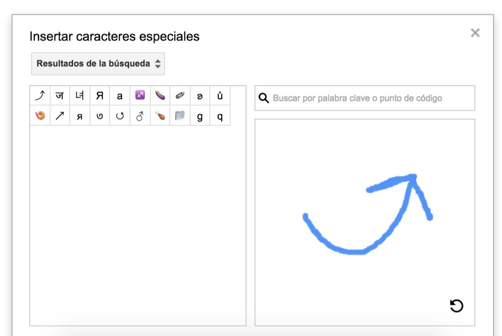
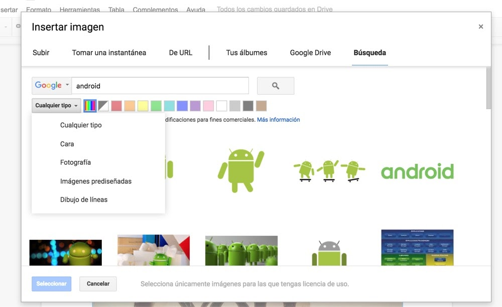
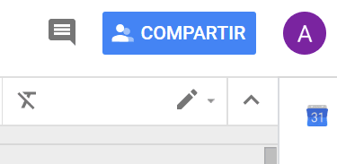
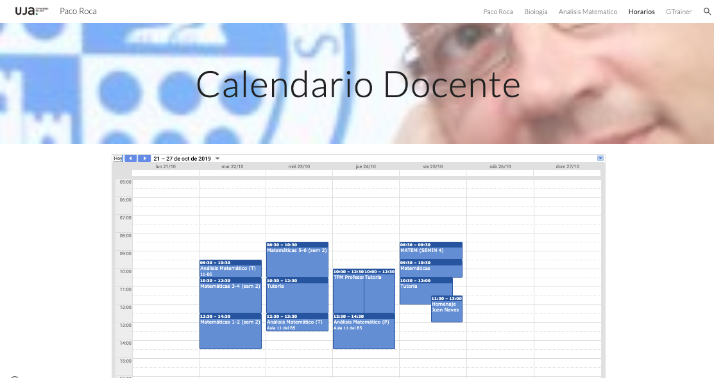
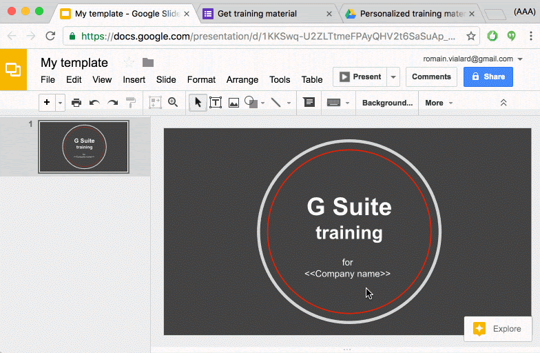

Una de las ventajas de Google Docs respecto a Office u otras suite de ofimática es la facilidad con la que podemos compartir nuestros documentos y entre varias personas editar el texto que estemos realizando.
Deberemos pulsar el botón azul en la esquina superior derecha y podemos o añadir personas o directamente copiar el enlace y enviarlo para que cualquier persona pueda ver el texto. Sin duda una de las funciones más prácticas y útiles de Docs.
Comentarios
Opciones de comentarios
Ver todos los comentarios
- En un teléfono o tablet Android, abre un archivo en la aplicación Documentos, Hojas de cálculo o Presentaciones de Google.
- En la parte superior de la pantalla, toca Comentarios .
Añadir comentarios
- En un teléfono o tablet Android, abre un archivo en la aplicación Documentos, Hojas de cálculo o Presentaciones de Google.
- Selecciona el texto o la celda y toca Añadir comentario o Comentar.
- Añade el texto.
- Toca Comentar.
Responder a los comentarios
Después de tocar un comentario específico, puedes:
- Editar un comentario: toca Editar
 . Haz los cambios y toca Guardar.
. Haz los cambios y toca Guardar. - Responder a un comentario: en la parte inferior, toca Responder.
- Resolver un comentario: encima del comentario, toca Resolver.
- Ir de un comentario a otro: desliza el dedo hacia la derecha o hacia la izquierda.
- Eliminar un comentario: toca Editar y, después, toca el icono de la papelera .
- Volver a la vista de edición: en la esquina superior derecha, toca CERRAR o el icono de cerrar
 .
.
Enviar un comentario a una persona específica
Para asegurarte de que una persona vea un comentario, puedes añadirla y recibirá una notificación por correo electrónico con tu comentario.
- En un teléfono o tablet Android, abre un archivo en la aplicación Documentos, Hojas de cálculo o Presentaciones de Google.
- Escribe un comentario.
- En cualquier parte del comentario, añade el nombre. Cuando aparezca la persona correcta, toca su nombre. También puedes añadir la dirección de correo electrónico de la persona que quieres que vea el mensaje.
- Toca COMENTAR.
Aceptar o rechazar un cambio sugerido
Si alguien sugiere un cambio en un documento de tu propiedad, puedes aceptarlo o rechazarlo. Esta función solo está disponible en Documentos de Google.
- En un teléfono o tablet Android, abre un documento en la aplicación Documentos de Google.
- Para ver la sugerencia, toca Sugerencia.
- Toca Aceptar o Rechazar.
Nota: Si cambias de opinión sobre una sugerencia que has aceptado, toca Deshacer.

Puedes utilizar los comentarios para asignar tareas con tu cuenta del trabajo o de tu centro educativo.
Asignar una tarea en un comentario
- En un teléfono o tablet Android, abre un archivo en la aplicación Documentos, Hojas de cálculo o Presentaciones de Google.
- Resalta el texto, las imágenes, las celdas o las diapositivas que quieras comentar.
- Para añadir un comentario, toca Insertar .
- Toca Comentar.
- Escribe tu comentario.
- En alguna parte del comentario, escribe @ o + justo delante de la dirección de correo electrónico de la persona a la que quieras asignárselo.
- Toca la casilla situada junto a "Asignar a [nombre]".
- Toca Asignar. La persona a la que hayas asignado la tarea recibirá un mensaje de correo electrónico.
Reasignar una tarea
- En un teléfono o tablet Android, abre un archivo en la aplicación Documentos, Hojas de cálculo o Presentaciones de Google.
- Toca el texto que tenga un comentario.
- Toca Ver comentario.
- Toca Responder.
- Escribe tu comentario.
- En alguna parte del comentario, escribe @ o + justo delante de la dirección de correo electrónico de la persona a la que quieras asignárselo.
- Toca la casilla situada junto a "Reasignar a [nombre]".
- Toca Enviar
 . La persona a la que hayas asignado la tarea recibirá un mensaje de correo electrónico.
. La persona a la que hayas asignado la tarea recibirá un mensaje de correo electrónico.
Marcar una tarea como completada
- En un teléfono o tablet Android, abre un archivo en la aplicación Documentos, Hojas de cálculo o Presentaciones de Google.
- En la esquina superior derecha del comentario, toca Marcar como completada.
Ver los seguimientos de un documento
- En un teléfono o tablet Android, abre la aplicación Documentos, Hojas de cálculo o Presentaciones de Google.
- Toca el número situado en la esquina superior derecha de un documento. Si no ves ningún número, significa que no hay seguimientos para ese documento.
- Puedes ver el número de:
- Tareas abiertas
- Sugerencias abiertas
- Para ir a la primera tarea o sugerencia, toca una opción de la lista.
- Para cerrar el menú, toca el número.
Utilizando la extensión del navegador Comment Visualizer for Google Docs™ es posible visualizar en el lateral todos los comentarios que hay a lo largo del documento con lo que es bastante sencillo tenerlos controlados

El primer truco para Google Docs que os traemos es el de poder escribir símbolos extraños. Para ello debemos abrir un documento > Insertar > Caracteres especiales en la barra superior. Al hacer clic se abre un cuadro y allí podemos elegirlo.
Pero ojo, porque no acaba aquí. Google Docs nos permite dibujar un símbolo con el ratón o el táctil y lo reconocerá y nos ofrecerá alguno similar. Es perfecto si queremos encontrar ese símbolo raro y no queremos estar pasando varios minutos buscando.

Cuando escribimos un texto es importante añadirle material multimedia para complementar la información. Normalmente añadimos imágenes que tenemos guardadas en nuestro ordenador pero es menos utilizada la función de búsqueda de imágenes que incorpora Google Docs.
Al insertar una imagen si vamos al apartado búsqueda podremos encontrar muchísimas y además establecer que únicamente sean las que tienen licencia de uso abierta.

Muchos estamos acostumbrados a escribir largos textos pero a veces es mucho más rápido y cómo utilizar la voz. Recomendamos a todos que probéis la escritura por voz. La encontraréis en Herramientas > Escritura por voz. Una vez ahí podemos empezar a hablar e incluso si por ejemplo decimos «punto», lo entenderá como el símbolo ortográfico. También entiende comandos como «nuevo párrafo».
Uno de los problemas que nos encontramos cuando copiamos algunos textos es que están en mayúsculas y por ejemplo queremos volverlo a minúsculas. Es una función que Microsoft Word tiene desde hace eones pero que extrañamente Google Docs no incorpora de base.
Para ello deberemos ir a Complementos y añadir «Change Case». Una vez instalado será tan fácil como volver a esa pestaña, seleccionar el texto a cambiar y aplicar el cambio. Más de una vez daremos las gracias por tenerlo.
Otro truco es el copiar y pegar. No, no me refiero al básico que eso sé que todos lo conocéis bien. Hablo del portapapeles web, un copy&paste avanzado que nos permite guardar diversos textos y pegar el que queramos. Cuando estamos escribiendo largos textos siempre viene bien tener un atajo, por ejemplo una lista de especificaciones, una receta o cualquier frase que se repita constantemente.
Cuando compartimos un texto con otra persona quizás queremos dejar anotaciones en algún sitio en concreto del texto, pero sin añadir ni modificar ninguna línea. Para ello se incorporaron recientemente los comentarios en Google Docs para dejar anotaciones.
Cuando escribimos un texto es bueno informarse previamente. Una de las opciones si estamos en Google Docs es utilizar la opción de Explorar que encontramos en Herramientas. Allí se detectarán los temas clave del texto y se ofrecerán imágenes, trabajos de investigación relacionados y más enlaces que podremos utilizar como bibliografía para el artículo. Toda la potencia del buscador de Google al alcance de un clic mientras estamos escribiendo.
Preparar el archivo
Sigue estos consejos para obtener los mejores resultados:
- Formato: puedes convertir archivos .JPEG, .PNG, .GIF y PDF (documentos de varias páginas).
- Tamaño del archivo: el archivo no debe tener más de 2 MB.
- Resolución: el texto debe tener una altura de 10 píxeles como mínimo.
- Orientación: los documentos deben estar orientados correctamente. Si la imagen está mal colocada, gírala antes de subirla a Google Drive.
- Idiomas: Google Drive detecta el idioma del documento.
- Fuente y conjunto de caracteres: utiliza fuentes comunes (Arial o Times New Roman, por ejemplo).
- Calidad de la imagen: las imágenes nítidas con iluminación regular y contraste claro funcionan mejor.
Convertir un archivo de imagen
- Abre drive.google.com en el ordenador.
- Haz clic con el botón derecho en el archivo que quieras convertir.
- Haz clic en Abrir con
 Documentos de Google.
Documentos de Google. - El archivo de imagen se convierte en un documento de Google, pero es posible que en la transferencia se pierda algo de formato:
- Lo más seguro es que se conserven el formato de negrita, de cursiva, el tipo y el tamaño de la fuente y los saltos de línea.
- En cambio, es poco probable que se detecten las listas, las tablas, las columnas y las notas a pie o al final de la página.
Desde el móvil es inmediato escanear documentos y convertirlos en un PDF que se suba al Drive. Los pasos a seguir son los siguientes:
- Abre la aplicación Google Drive .
- Abajo a la derecha, toca Añadir
 .
. - Toca Escanear .
- Haz una foto del documento que quieras escanear.
- Ajustar el área de escaneado: toca Recortar
 .
. - Repetir la foto: toca Volver a escanear la página actual .
- Escanear otra página: toca Añadir .
- Para guardar el documento terminado, toca Listo .
Trabajar con documentos institucionales o bien documentos estándar es bastante útil emplear las plantillas de Google Docs.
Para utilizar una plantilla debe seguir los siguientes pasos:
- En un ordenador, ve a Documentos, Hojas de cálculo, Presentaciones o Formularios de Google.
- Arriba a la derecha, haz clic en Galería de plantillas.
- Haz clic en la plantilla que quieras usar.
- Se abrirá una copia de la plantilla.
Mostrar u ocultar plantillas
Si no te aparecen las plantillas puede ser que estén ocultas:
- Abre la pantalla de inicio de Documentos, Hojas de cálculo, Presentaciones o Formularios de Google.
- Arriba a la izquierda, haz clic en Menú
 Configuración.
Configuración. - Activa o desactiva Mostrar las plantillas recientes en las pantallas de inicio.
Plantillas interesantes
Hay muchos sitios en internet de donde reutilizar plantillas de muchos tipos: horarios, calendarios, como por ejemplo estas de https://www.xataka.com/basics/89-plantillas-google-docs-para-organizarlo-todo
- Apuntes de clase Juguetón, eligiéndolo en la sección educación entre las plantillas hechas por Google.
- Apuntes de clase Libro de bolsillo, eligiéndolo en la sección educación entre las plantillas hechas por Google.
- Apuntes de clase Lujo, eligiéndolo en la sección educación entre las plantillas hechas por Google.
- Essay Grading Rubric, por Google.
- Informe APA, eligiéndolo en la sección educación entre las plantillas hechas por Google.
- Informe Juguetón, eligiéndolo en la sección educación entre las plantillas hechas por Google.
- Informe Lujo, eligiéndolo en la sección educación entre las plantillas hechas por Google.
- Informe MLA, eligiéndolo en la sección educación entre las plantillas hechas por Google.
- Informe Sencillo, eligiéndolo en la sección educación entre las plantillas hechas por Google.
- Little League Newsletter, por Google.
- Notas de clase, por Google.
- Plan de lección, por Google.
- Plan de lección Syllabus, por Google.
- Programa lectivo, eligiéndolo en la sección educación entre las plantillas hechas por Google.
- Programa lectivo Juguetón, eligiéndolo en la sección educación entre las plantillas hechas por Google.
- Programa lectivo Sencillo, eligiéndolo en la sección educación entre las plantillas hechas por Google.
- Red Blocks Newsletter.
- Redacción Juguetón, eligiéndolo en la sección educación entre las plantillas hechas por Google.
- Redacción Libro de bolsillo, eligiéndolo en la sección educación entre las plantillas hechas por Google..
- Reseña de libro, eligiéndolo en la sección educación entre las plantillas hechas por Google.
- Student Report trabajo escuela, por Google.
Es posible generar un documento formado por cajas de texto rellenables de manera bastante sencilla:
- Se inserta tabla de dos por uno
- En la primera columna se coloca por ejemplo "Nombre", se elige en la flechita del lado, y de ahí Borde exterior - > ancho del borde -> 0 puntos.
- Hago clic en la esquina superior derecha de la segunda columna y nuevamente hago clic en la pequeña flecha. Una vez más se selecciona "borde exterior -> Ancho -> 1 punto"
Las extensiones de Chrome Web Store te permiten personalizar Chrome y añadirle características y funciones.
Instalar una extensión
- Abre Chrome Web Store.
- Busca una extensión y selecciónala.
- Haz clic en Añadir a Chrome.
- Algunas extensiones te informan si necesitan determinados permisos o datos. Para aprobar las solicitudes, toca Añadir extensión.
Si quieres usar la extensión, haz clic en el icono situado a la derecha de la barra de direcciones.
Si usas un ordenador del trabajo o de clase, es posible que tu organización bloquee algunas extensiones.
Utilizando la extensión del navegador Chrome Convert Google Docs to Gmail™ drafts es posible generar plantillas para el correo electrónico de manera muy sencilla desde Google Docs
Utilizando la extensión corrector ortográfico y gramatical es posible corregir no solo faltas de ortografía sino concordancias gramaticales de manera automática
Con la extensión del navegador EquatIO - Math made digital se pueden introducir expresiones matemáticas de forma sencilla, incluyendo ecuaciones y fórmulas.
Es válido para los documentos, formularios*, presentaciones*, hojas de cálculo* y dibujos* de Google.
La información se introduce usando el teclado, el reconocimiento de escritura* (mediante la pantalla táctil o el panel táctil) y el dictado de voz, fotografías desde el móvil, capturas de pantalla...
Utilizando la extensión Paperpile
Crea una bibliografía formateada estándar. Se pueden insertar citas con un clic, admite citas en el texto y citas a pie de página, APA, MLA, Chicago y más de 7000 estilos de citas específicas de revistas...
Con la extensión de Chrome DocuViz es posible generar la visualización de la revisión del historial en un documento en coautoría en Google Docs. Codifica por colores quién editó qué, cuándo y dónde. El tiempo pasa de izquierda a derecha. Las columnas de color más oscuro representan contenido de revisión; y las columnas de color más claro representan los enlaces entre columnas. Al extender la función de Historial de revisiones existente en Google Docs, DocuViz muestra todo el historial en una vista de flujo de historial en lugar de la vista de una revisión a la vez. Puede revelar la evolución del documento y los patrones de colaboración de los coautores.
Con el Complemento de Google Docs BarCode Generator es posible crear códigos de barras, códigos QR etc e insertarlos directamente en un documento de Google.
Con la extensión Kaizena es posible mandar las correcciones a los alumnos con voz vídeo etcétera incluidas dentro del propio Google Docs comentarios y las tareas.

Con la extensión Quick Pic es posible incluir imágenes tomadas desde el móvil en un documento de Google Docs con un simple toque.

Una manera muy práctico de generar tests o exámenes de manera rápida y realmente relacionada con el contenido a estudiar es utilizando la extensión de Google Docs denominada Doc to Form. Permite seleccionar de manera rápida contenidos de un documento de Google y convertirlos de manera automática en un Google Forms.

Hay bastantes complementos que permiten mejorar la productividad, por poner algunos ejemplos concretos, los siguientes nos permiten:
- Integrar tablas de contenido (Table of content)
- Agendar y hacer conferencias desde el documento (UberConference)
- Integrar diagramas y mapas mentales (Gliffy Diagrams)
- Bajar plantillas prediseñadas (Template Gallery)
Añadir una nota de Keep a un documento
- En Documentos, haz clic en Herramientas > Bloc de notas de Keep.
- Arrastra una nota al documento.

- En la parte inferior del documento, haz clic en Explorar
- En el cuadro de búsqueda, introduce la información que sea relevante para tu cita (libro, autor, título del artículo, etc.).
- Haz clic en los enlaces que sean relevantes para tu tema.
- Copia el texto que desees del contenido sugerido y pégalo en tu documento.
- Consejo: Para borrar el formato de un texto, selecciónalo y haz clic en Formato > Borrar formato.
- En el documento, indica el lugar donde quieres añadir la nota a pie de página. A continuación, en los resultados de Explorar, coloca el cursor sobre la fuente que has citado y haz clic en Citar " para añadir la nota a pie de página.
Podemos lograr la generación automática del PDF para el documento que queramos, solamente agregando un código a la dirección del documento.
Solamente debemos ir al botón azul de COMPARTIR

Damos click en la palabra Avanzado

En la sección de Enlace para compartir, tomamos la dirección del documento, y vemos que termina con edit/?usp=sharing

Si cambiamos esa terminación por export?format=pdf,(puedes copiar y pegar la dirección en otro lado para que la puedas editar cómodamente), tendremos listo nuestro link para compartir. Debe quedar algo parecido a esto:
https://docs.google.com/document/d/1YUG9-nkKxmg-c_W1sMRxYf01s/export?format=pdf
Si compartes el link de esa manera, Google Docs automáticamente generará un PDF para descarga, siempre con los últimos cambios que tengas hasta ese momento.
- En Drive, abre el archivo.
- Haz clic en Compartir.
- Si el archivo no se ha compartido aún, compártelo.
- Haz clic en Avanzado.
- Coloca el cursor sobre el nombre de la persona y haz clic en Establecer caducidad
 .
. - Cambia la fecha de vencimiento del acceso.
- Haz clic en Guardar cambios y, a continuación, en Listo.
Nota: No puedes poner la fecha de vencimiento en el día en el que estás. Si tienes que restringir el acceso de inmediato, deja de compartir el archivo.
Compartir calendario
Puedes compartir tu calendario con familiares, amigos y compañeros de trabajo.
- Comparte tu calendario principal con alguien para que pueda encontrar tu agenda.
- Crea un calendario que puedan editar varias personas, como un calendario familiar.
- Añade a alguien, por ejemplo, un auxiliar administrativo, como delegado de tu calendario para que programe y edite eventos por ti.
Importante: Ten cuidado si compartes tu calendario. Si concedes todos los permisos a alguien, esa persona podrá responder a las invitaciones, crear y modificar eventos, y compartir tu calendario con otros usuarios.
Compartir un calendario
En Google Calendar, puedes tener varios calendarios a los que añadir eventos y compartir cada uno de ellos de forma distinta.
Compartir un calendario ya creado
Puedes compartir el calendario principal de tu cuenta u otro calendario tuyo. Más información sobre cómo crear un calendario
Notas:
- Si quieres compartir un calendario que no es tuyo, tendrás que pedir al propietario que active el permiso Hacer cambios y gestionar el uso compartido.
- Si tu cuenta se gestiona a través del trabajo o de un centro educativo, es posible que no tengas acceso a todas las opciones de permisos. Para obtener más información, ponte en contacto con tu administrador.
- Abre Google Calendar en un ordenador. No es posible compartir calendarios desde la aplicación Google Calendar.
- Busca la sección "Mis calendarios" en el lateral izquierdo de la página. Tal vez tengas que hacer clic en ella para ver toda la lista.
- Coloca el cursor sobre el nombre del calendario que quieres compartir y haz clic en Más Configurar y compartir.
- Para compartirlo con muchas personas: en "Permisos de acceso", marca las casillas en función de cómo quieras compartirlo y elige las opciones en el menú desplegable. Más abajo se explican estas opciones.
- Para compartirlo solo con algunas personas: en la sección "Compartir con determinadas personas", haz clic en Añadir personas.
- Añade la dirección de correo electrónico de la persona o el grupo de Google. Utiliza el menú desplegable para ajustar la configuración de sus permisos.
- Haz clic en Enviar.
- El destinatario tendrá que hacer clic en el enlace del correo para añadir el calendario a su lista.
Si compartes tu calendario con un grupo, no se añadirá automáticamente a su lista "Otros calendarios". La configuración que define con quién y cómo se comparte el calendario se va ajustando automáticamente a todos los cambios en los miembros del grupo. Más información sobre Grupos de Google
Delegar un calendario
Puedes conceder a otras personas todos los permisos para gestionar tu calendario. Te recomendamos que no se los concedas a muchas personas o grupos.
- Abre Google Calendar en un ordenador.
- Busca la sección "Mis calendarios" en el lateral izquierdo de la página. Tal vez tengas que hacer clic en ella para ver toda la lista.
- Coloca el cursor sobre el calendario que quieras compartir.
- Haz clic en Más Configurar y compartir.
- En la sección "Compartir con determinadas personas", haz clic en Añadir personas.
- Introduce la dirección de correo electrónico del nuevo delegado.
- En "Permisos", haz clic en Hacer cambios y gestionar el uso compartido.
- Haz clic en Enviar.
Nota: Tu delegado tendrá que hacer clic en el enlace del correo para añadir el calendario a su lista. En caso de que cree eventos en tu calendario, tú aparecerás como remitente de las invitaciones. Más información sobre la configuración de permisos
Puedes añadir a tu sitio web una versión interactiva de tu calendario, con botones para que tus visitantes puedan guardar los eventos de tu calendario.
Incrustar un calendario en tu sitio web
- Abre Google Calendar en un ordenador. Solamente se puede obtener el código para insertar un calendario en un sitio web desde un ordenador, no desde la aplicación Google Calendar.
- Arriba a la derecha, haz clic en la rueda dentada Configuración.
- En el lado izquierdo de la pantalla, haz clic en el nombre del calendario que quieres insertar.
- Copia el código de iFrame que aparece en el apartado "Integrar el calendario".
- Debajo del código de inserción, haz clic en Personalizar.
- Elige tus opciones y copia el código HTML que aparece.
Solamente podrán ver tu calendario incrustado las personas con las que lo hayas compartido. Si quieres que todos tus visitantes vean tu calendario, tienes que hacerlo público.
Permitir que los visitantes del sitio web guarden un evento de tu calendario
Puedes añadir a tu sitio web un botón de Google Calendar para que los visitantes guarden tu evento rápidamente en sus propios calendarios de Google Calendar. Para permitir que cualquier persona guarde tu evento, debes hacer público tu calendario.
- Abre Google Calendar en un ordenador. Solamente puedes modificar la visibilidad de tu calendario en el ordenador, no en la aplicación para móviles.
- En un calendario público, crea o edita un evento.
- Haz clic en Más acciones Publicar evento.
- En la ventana "Publicar evento", copia el código HTML que aparecerá.
- Abre el editor de tu sitio web y pega el código donde quieras que aparezca el botón del evento.

Con la aplicación Google Calendar no puedes añadir los calendarios de otras personas. No obstante, si añades los calendarios con el ordenador, los verás en la aplicación.
- Abre Google Calendar en un ordenador.
- A la izquierda, en "Añadir el calendario de un amigo", escribe el nombre o la dirección de correo de la persona cuyo calendario quieres ver.
- Selecciona su nombre.
- Si ha compartido el calendario públicamente o con tu organización, verás sus eventos en tu calendario.
- Si no ha compartido su calendario públicamente, puedes escribirle para pedirle que lo comparta contigo. En cuanto lo comparta, recibirás un correo.
Al mirar más de un calendario a la vez, se mostrarán las agendas de ambas personas lado a lado.
Consejo: Si quieres mostrar u ocultar su calendario, haz clic en el nombre de esa persona en el apartado "Otros calendarios".
Si una persona ha compartido su calendario contigo, o si pertenece a tu organización, puedes saber si está libre u ocupada cuando la añades a un evento.
- Abre Google Calendar en un ordenador.
- En la parte inferior derecha, haz clic en Crear evento .
- En el cuadro "Añadir invitados", escribe el nombre o la dirección de correo electrónico de la persona a la que quieras invitar.
- Debajo de "Invitados", haz clic en Sugerencias de horas. Si el invitado ha compartido su calendario contigo, verás en qué horario podría asistir.

Puedes configurar un bloque para citas en tu calendario para que otros usuarios las reserven. Por ejemplo, los profesores pueden invitar a sus alumnos a que reserven horas durante el horario de tutorías de la semana.
Las horas disponibles son útiles cuando no sabes quién puede necesitar reunirse contigo, pero quieres estar disponible. Puedes ofrecer un bloque de tiempo en tu calendario para que otras personas reserven horas dentro de ese bloque. Por ejemplo, puedes reservarte dos horas para mantener reuniones de 30 minutos, y otras personas pueden reservar después uno de los periodos de 30 minutos a la hora que mejor les venga.

Crear y compartir horas disponibles
¿Qué relación hay entre las horas disponibles y los eventos normales?
Crear un bloque para citas
- En un ordenador, abre Google Calendar con tu cuenta del trabajo o de tu centro educativo.
- Asegúrate de tener abierta la vista Semana o una de Día.
- Haz clic en cualquier parte del calendario. En la ventana de evento que aparece, haz clic en Horas disponibles.
- Escribe los detalles (título incluido) y elige el calendario en el que quieres mostrar el evento.
- Si quieres añadir más información, como una ubicación o descripción, haz clic en Más opciones.
Nota: Si quieres que el bloque para citas se repita, hazlo antes de invitar a otras personas a que reserven una hora. Cuando haces que se repita un bloque para citas que ya tiene horas reservadas, estas horas se duplican, lo que puede dar lugar a una doble reserva. Cómo hacer que se repita un evento
Añadir invitados al bloque para citas
Cuando añades un invitado al bloque para citas, el invitado se añade a todas las horas disponibles del bloque y recibe un correo electrónico cada vez que alguien reserva una cita. Por ejemplo, un profesor puede añadir a su asistente como invitado para que esté presente durante el horario de tutorías.
Para añadir invitados a un bloque para citas, abre el evento de la cita y haz clic en Añadir invitados.
Nota: No añadas a personas que quieran reservar una hora disponible individual. En su lugar, envíales un enlace a la página de citas.
Invitar a otros usuarios a reservar una hora disponible
Después de configurar el bloque para citas, puedes enviar a otras personas un enlace a tu página de citas para invitarles a que reserven una hora.
- Abre Google Calendar.
- Haz clic en tu cita Ir a la página de citas de este calendario.
- Copia y pega el enlace de la página de citas de tu navegador.
- Envía este enlace a los usuarios que quieran reservar una hora disponible.
Nota: Las personas que quieran reservar tus horas disponibles pueden hacerlo con Google Calendar. Si es necesario, pueden crear una cuenta de Google para empezar.
Reservar una hora disponible
- Haz clic en el enlace de la página de citas. Encontrarás el enlace en un correo electrónico, mensaje o evento de calendario que se haya compartido contigo.
- Haz clic en una hora disponible Guardar.
Cancelar una hora disponible
- Abre Google Calendar.
- Haz clic en la hora disponible.
- En "¿Asistirás?", haz clic en No.
Con Form Publisher , puede convertir fácilmente los envíos de Formularios de Google en Documentos de Google, Hojas de cálculo de Google o documentos PDF. Con el lanzamiento de la nueva API de Google Slides hoy , nos complace anunciar que ahora también puede generar presentaciones de Google Slides.

Hoy, la mayoría de los usuarios de Form Publisher convierten sus datos de formulario en documentos, pero el 25% de ellos también los muestran como hojas de cálculo. Esperamos que la adición del nuevo tipo de archivo de presentación les brinde aún más opciones y flexibilidad.
Por ejemplo, Revevol , un revendedor de G Suite y nuestra empresa matriz, ofrece muchos entrenamientos. Los capacitadores generalmente hacen una copia del mazo de material de capacitación (en Presentaciones de Google) para cada sesión y luego reemplazan manualmente el nombre del cliente, el nombre del capacitador y la fecha de capacitación. Con la última integración de Google Slides, Form Publisher facilita este proceso.

Una vez que configure Form Publisher en su formulario, cada respuesta del formulario generará una presentación a partir de una copia de la plantilla
Form Publisher es uno de los complementos más populares para Google Forms, y esperamos incorporar futuras mejoras de productos y API a G Suite. Ya estamos planeando permitir que los usuarios carguen imágenes a través de Formularios de Google para agregarlas directamente a su presentación de Presentaciones de Google, pero estén atentos para más información.
Con el complemento para Google Docs Form maker puedes crear desde los campos de una Hoja de datos un Formulario.
Este complemento le permitirá crear formularios, incluidos cuestionarios, utilizando los datos en una hoja de cálculo. Hará que el proceso de creación de formularios sea mucho más rápido. Se encargará de todos los tipos de preguntas disponibles en los formularios y le permite agregar imágenes y videos. También puede editar y actualizar preguntas desde la hoja de cálculo. agregue reglas de validación y agregue comentarios para las preguntas del cuestionario. configure un banco de preguntas y seleccione subconjuntos de esas preguntas para que aparezcan en su formulario. importe preguntas de un formulario existente para usar en un nuevo formulario y agregue preguntas existentes a su banco de preguntas. agregue reglas de navegación para controlar qué página aparece a continuación dependiendo de las respuestas del usuario a preguntas de opción múltiple y de lista desplegable. cree listas de opciones de hasta 1,000 elementos a partir de los datos en su hoja de cálculo. Haga que las listas de opciones sean dinámicas, actualizándose cada hora o en el envío del formulario. Preserve las reglas de bifurcación de formularios cuando las listas de opciones se actualicen automáticamente.
Desde diversos complementos es posible generar correo masivo desde GMail:
Bueno, encontré algunas herramientas ya publicadas que permiten el envío de correos electrónicos de forma automática desde google drive, pero ninguna herramienta respondía al 100% de mis necesidades, entonces, después de tanto buscar, encontré la herramienta Apps Script de google, un lenguaje de programación basado en Java Script que permite maximizar el potenciar de documentos, hojas de cálculo y demás al interior de google drive. A través de este lenguaje de programación encontré un Script, el cual estoy modificando, este permite enviar correo electrónico personalizado, a cada uno de los usuarios.
El Script a continuación:
REPORT THIS AD
Agradecimiento al sitio web: https://stackoverflow.com/questions/11568061/how-to-send-email-from-a-spreadsheet de donde tomé el código original, el cual funciona a la perfección.
El Script anterior, tomado del sitio web que se referencia, y con pequeñas modificaciones, permite automatizar el envío de correos electrónicos, personalizados, a cada uno de los participantes del taller, de esta manera ya no es necesario elaborar la combinación de correspondencia ni el envío manual de los correos electrónicos.
Para facilitar la ejecución del Script que envía el correo electrónico se creó el siguiente Script, el cual crea un elemento de menú que aparece en la hoja de cálculo.
El Script anterior es tomado del sitio: https://developers.google.com/apps-script/reference/base/menu
Después de ejecutar el Script se puede ver el nuevo elemento de menú con la opción correspondiente, la opción "Enviar correos" llama la función sendEmails definida previamente.
REPORT THIS AD
¿Qué problemas se presentaron?
Cuando se hace el envío masivo y automático de correos electrónicos el sistema establece un límite, al parecer este es de 20 mensajes por día. Al momento de la elaboración de este texto me encuentro realizando el análisis y la realimentación de unos 140 estudiantes, para eso separé los datos en grupos de 20, cada uno de ellos en un archivo separado. El sistema permite la configuración para que el Script se ejecute automáticamente (es decir, que se envíen los e-mail) en fechas determinadas, programé entonces el envío de 20 mensajes diarios durante 7 días, para cumplir así con el envío de los 140 mensajes.
La configuración de las fechas y horas de envío se realiza de la siguiente manera:
1. Después de ingresar a través de la opción herramientas / editor de secuencias de comandos, hacer clic en "Activadores del proyecto activo" (el icono con forma de reloj).

2. Hacer clic en el enlace "No se ha configurado..."
REPORT THIS AD
3. Seleccionar la opción "Basado en el tiempo", y seleccionar "fecha y hora específica", ingresar en el cuadro de la parte inferior la fecha y hora específica para que el Script se ejecute de forma automática.
Colaboración en vivo
Ahora es más fácil para los usuarios de tecnologías de asistencia, como lectores de pantalla y pantallas Braille, realizar un seguimiento de las actualizaciones en tiempo real realizadas por los colaboradores en un documento. Con las ediciones en vivo, puede ver un resumen actualizado periódicamente de los cambios de los colaboradores en una barra lateral conveniente. En Google Docs creemos que la colaboración funciona mejor cuando funciona para todos.
Para ver las ediciones en vivo, abra la configuración de Accesibilidad yendo a Herramientas> Configuración de accesibilidad y marque "Activar soporte de lector de pantalla". Luego, seleccione "Mostrar ediciones en vivo" en el menú Accesibilidad.